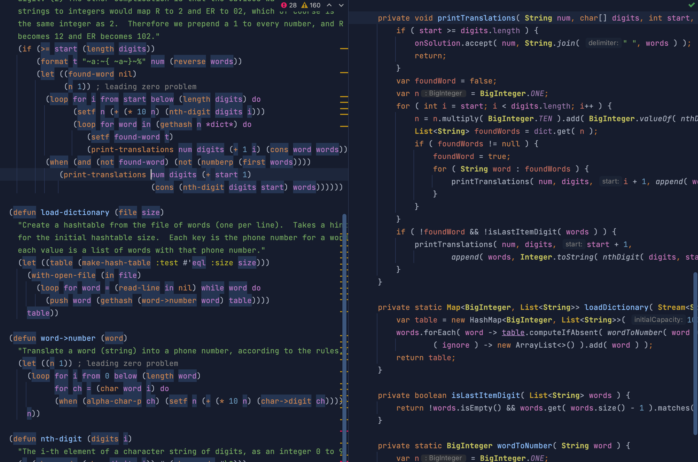
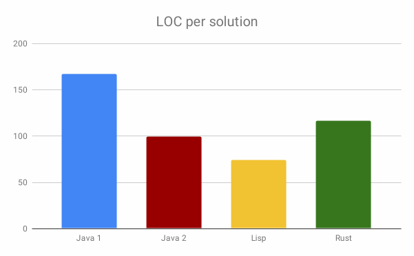
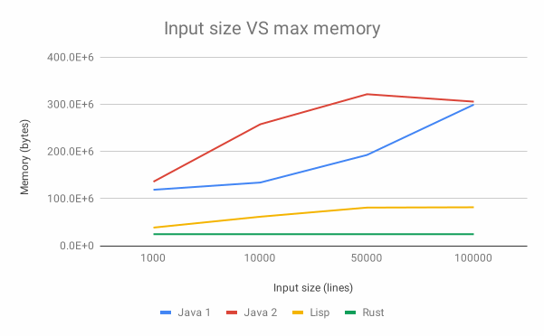
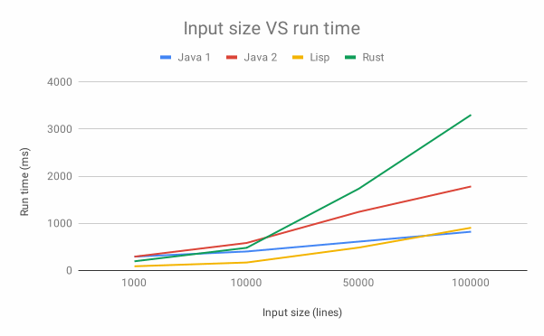

Обсуждение влияния языков программирования на производительность и эффективность программ.
Written on 24 Jul 2021, 02:54 PM (Last updated on 31 Jul 2021, 04:34 PM)

В 1999 году Лутц Прешельт опубликовал основополагающую статью в COMMUNICATIONS OF THE ACM (октябрь 1999 г. / том 42, № 10).
называющуюся Сравнение различий в эффективности Java и C / C ++ с межличностными различиями, отныне Java VS C, который, кажется, позже (март 2000 г.) был расширен до полной статьи, Эмпирическое сравнение C, C ++, Java, Perl, Python, Rexx и Tcl для программирования поиска/обработки строк, далее Scripting VS Java/C.
В этой статье они проанализировали данные исследования (которое проводилось для другой статьи, как мы увидим позже), где участникам было предложено решить проблему, состоящую из кодирования телефонных номеров в комбинацию цифр и слов из словаря, предположительно чтобы людям было легче запоминать телефонные номера, которые они, возможно, захотят вспомнить позже (это было до того, как мобильные телефоны получили широкое распространение).
Та же проблема была позже использована Роном Гарретом (он же Erann Gat) в своей короткой статье, Lisp как альтернатива Java, отныне Lisp VS Java, начиная с 2000 года.
Обе статьи широко цитируются, и даже сегодня на них продолжают ссылаться..
В этой статье я хотел бы вернуться к этим статьям, проанализировать их методологию и выводы и попытаться выяснить, изменилось ли что-нибудь за 21 год с момента публикации этих статей, написав свои собственные решения проблемы, как если бы я сам участвовал в одном из исследований.
Я написал решение на Java, не глядя на какие-либо другие решения, чтобы узнать, как бы работало мое решение (и Java 16), если бы оно участвовало.
После этого я проанализировал некоторые другие решения и сравнил их с моими. Основываясь на своих выводах и некоторых комментариях самого Прешельта в его статье, я решил написать вторую программу на Java, которая соответствовала бы совершенно другой стратегии, которая обычно использовалась в более динамичных языках. Я реализовал тот же алгоритм и в Rust, чтобы понять, как будет работать современный системный язык.
Это должно позволить нам более напрямую сравнивать современные языки с использованием одного и того же точного алгоритма (насколько это возможно), устраняя потенциально большие различия, которые могут возникнуть из-за различных алгоритмов, выбранных программистом.
Все данные, используемые в Prechelt Java VS C, а также решения Java/C/C++, используемые в Scripting VS Java/C, взяты из более раннего исследования метода разработки программного обеспечения под названием PSP (Personal Software Process). Это исследование действительно проводилось с августа 1996 года по октябрь 1998 года!
Это означает, что некоторые участники фактически использовали самый первый выпуск JDK!
Цель этого исследования не имела ничего общего с изучением различий между Java и C/C ++, она была связана с исследованием того, насколько эффективна PSP (результаты показали, что, в основном, практикующие PSP имели более предсказуемую и стабильную производительность, но также работали немного медленнее. ).
В этом исследовании приняли участие 55 аспирантов, 24 из которых использовали Java, 9 использовали C, 13 использовали C ++, а двое других использовали Modula-2 и нечто под названием Sather-K! Большинство студентов пришли либо с курса PSP, либо с курса Java Advanced.
Тем не менее, это были данные, на которых была основана статья Java VS C. В него вошли 24 программы, написанные на Java, 11 - на C ++ и 5 - на C.
Инструкции, данные участникам исследования, слегка адаптированные для статьи о Lisp VS Java можно найти на flownet.com.
Вот краткое описание проблемы, которую должны были решить участники:
Все программы реализуют один и тот же функционал, а именно преобразование телефонных номеров в строки слов. ... Преобразование определяется фиксированным отображением символов в цифры следующим образом: e j n q r w x d s y f t a m c i v b k u l o p g h z 0 1 1 1 2 2 2 3 3 3 4 4 5 5 6 6 6 7 7 7 8 8 8 9 9 9 Задача программы - найти такую последовательность слов, чтобы последовательность символов в этих словах точно соответствовала последовательности цифр в номере телефона. Необходимо найти и распечатать все возможные решения. Решения создаются пословно, и если ни одно слово из словаря не может быть вставлено в какой-то момент во время этого процесса одна цифра из номера телефона может появиться в результате в этой позиции. Многие телефонные номера вообще не имеют решения.
Если вы хотите «участвовать» в исследовании, как можно точнее следуйте инструкциям, приведенным в этой ссылке. Затем вы можете сравнить свое решение с моим и другим, используя мой репозиторий GitHub, в котором есть инструкции, как легко добавить ваше решение в текущий тест и запустить его!
Это хорошая задача, не слишком простая, но и не очень сложная. Я нашел это достаточно интересным, чтобы самому захотеть принять участие после того, как я случайно наткнулся на это в Интернете, через 21 год после публикации исследования!
Видимо, я был не один такой. Рон Гаррет (который в то время работал в NASA, а позже перешел на работу в раннюю версию Google) счел достаточно интересным провести собственное исследование (уже упоминавшееся Lisp VS Java), повторно используя ту же проблему, но прося только программистов Lisp - реши это. Он получил 16 решений от добровольцев, набранных из новостной Интернет-группы.
Даже Питер Норвиг, которого я считаю знаменитостью в области компьютерных наук, опубликовал на своем веб-сайте собственное решение проблемы, написанное на Common Lisp .
Что они все узнали?
Ну, в общем, Java медленная, использует слишком много памяти и требует не меньше усилий, чем C или C ++, чтобы написать что-нибудь с ее помощью. Кроме того, по крайней мере в случае с Прешалтом, разница между программистами обычно больше, чем разница между языками.
По их собственным словам:
Начиная с JDK 1.2, программы Java обычно намного медленнее, чем программы, написанные на C или C ++. Они также потребляют гораздо больше памяти.
Но и:
Однако даже внутри одного языка межличностные различия между реализациями одной и той же программы, написанной разными программистами (соотношение плохих и хороших), намного больше чем средняя разница между Java и C / C ++.
... для данной проблемы программирования «языки сценариев» (Perl, Python, Rexx, Tcl) более продуктивны, чем обычные языки. С точки зрения времени выполнения и потребления памяти они часто оказываются лучше, чем Java и не намного хуже, чем C или C++.
И снова:
Как правило, различия между языками обычно меньше, чем типичные различия. у разных программистов на одном языке.
... Производительность Lisp сравнима с C ++ или превосходит ее по скорости выполнения ... она также имеет значительно меньшую изменчивость, что приводит к снижению проектного риска. Кроме того, время разработки значительно меньше и менее изменчиво, чем на C++ или Java. Потребление памяти сравнимо с Java ...
Пречелт подробно описывает установку своих экспериментов и профиль участников, а также многочисленные предостережения, связанные с каждым исследованием. Я настоятельно рекомендую бегло просмотреть статью PSP, которая положила начало его более поздним публикациям.
Обратите внимание, что в первоначальном исследовании было две разные группы студентов: студенты PSP, которые научились использовать технику (PSP) для явного повышения качества своей работы, и контрольная группа, в основном студенты курса Java, которые обязаны участвовать в исследовании. Большинство представителей C/C ++ исходило от группы PSP (17 VS 5), но представители Java были более равномерно разделены (14 VS 10).
Важно помнить, что студенты PSP были приучены тратить больше времени на анализ проблемы и попытки предотвратить дефекты в своих программах, и что самым важным требованием исследования было сделать программы максимально надежными.
TЭто подразумевает некоторую разницу в типах студентов, работающих в Java VS C/C++. В Java VS C Пречальт даже упоминает, что в среднем у программистов Java было вдвое меньше опыта программирования на Java, чем у программистов C/C ++ на C/C++, что естественно, учитывая, что исследование проводилось, когда Java едва ли был освоен. выпущен впервые.
В любом случае, как в документе PSP, так и в Java VS C Пречелт очень искренне говорил об ограничениях исследования, и его выводы были довольно твердыми, учитывая данные (и тот факт, что они использовали Java 1.2, выпущенную в 1998 году).
Однако с Scripting VS Java/C все становится еще мрачнее. Обратите внимание, что Prechelt снова использует те же данные для программ Java и C/C++, но для группы языков сценариев участники были в основном случайными людьми, найденными в ранних группах Интернета:
The Perl, Python, Rexx, and Tcl programs were all submitted in late 1999 by volunteers after I had posted a âCall for Programsâ on several Usenet newsgroups (comp.lang.perl.misc, de.comp.lang.perl.misc, comp.lang.rexx, comp.lang.tcl, comp.lang.tcl.announce, comp.lang.python, comp.lang.python.announce) and one mailing list (called âFun with Perlâ, fwp@technofile.org).
Также обратите внимание на то, что время, затраченное на решение решений, было самооценено, и участники, использующие язык сценариев, никоим образом не контролировались, в отличие от тех, кто принимал участие в первом исследовании (многие из которых были вынуждены тратить больше времени на размышления о проблеме). проблемы, как поощряется PSP).
Пречелт отмечает, что время работы, указанное программистами сценариев, может быть неточным. Что ж, это, наверное, самое большое преуменьшение во всех его статьях.
В документе установлено, что среднее время написания сценария составило 3,1 часа по сравнению с 10,0 часами для группы без сценария.
Обратите внимание, что в зависимости от того, как вы смотрите на данные, вы также можете сделать вывод, что участники, которые сами сообщили о своем времени, были в 3 раза быстрее, чем те, за кем действительно наблюдали. Более половины студентов в первоначальном исследовании PSP потратили больше рабочего дня на решение проблемы, и они использовали не только Java в этом исследовании, но практически любой язык, который они хотели использовать (хотя Prechelt, похоже, использовал только Java результаты в его более поздней статье)!
Но есть еще кое-что интересное. Например, тот факт, что сценарии были в два-три раза короче, чем сценарии, не являющиеся сценариями, и что есть противоречивые результаты относительно различий в надежности программ, открытие, которое озадачило многих других авторов исследования, особенно в области статических VS динамически. типизированные языки (поскольку это говорит о том, что использование статических типов на самом деле не приводит к более надежным программам).
Если Прешельт в основном упорно указывал на недостатки своих выводов, то Гаррет был гораздо менее настойчив.
Непонятно, как были собраны данные для его исследования, поскольку процедура не была описана вообще, за исключением примечания, в котором говорилось, что мы, насколько это возможно, дублировали обстоятельства исходного исследования. Учитывая, что участники набирались из интернет-групп, я сомневаюсь, что за участниками наблюдали на месте, что заставляет меня думать, что собранные данные о времени разработки следует воспринимать с большой долей скептицизма. Тем не менее, сообщаемое время похоже на время, самоотчетное группой скриптоводов в исследовании Prechelt: от 2 до 8,5 часов для пользователей Lisp, от 3 до 10 часов для скриптовой группы в исследовании Prechelt.
Прешельт делает по этому поводу интересное наблюдение:
... старое эмпирическое правило, согласно которому производительность программиста измеряется в строк кода в час (LOC/час) примерно не зависит от языка программирования.
Он использует это рассуждение, чтобы сделать вывод, что если это правда, то время, о котором говорят сами люди, не должно быть далеким от реальности.
Во всяком случае, Гаррет идет намного дальше и утверждает в своем заключении:
Lisp превосходит Java и сравним с C++ во время выполнения, и он превосходит как в усилии программирования, так и в вариативности результатов.
Это довольно убедительный вывод.
Он спрашивает себя в своей статье:
почему, если Lisp настолько хорош, неужели он не используется более широко?
Основываясь на небольшом исследовании, подобном исследованию Гаррета, я считаю, что предположение о том, что Lisp настолько хорош, необоснованно. Конечно, он может использовать свой собственный опыт и, возможно, свидетельства других, чтобы принять это как факт, но в подобной статье вы должны предоставить свои источники, когда делаете смахивающие заявления, подобные этому. Личного чувства недостаточно.
Однако данные свидетельствуют о том, что Lisp столь же продуктивен, как и языки сценариев того времени, и имеет скорость, сравнимую с C и C ++, что действительно является выдающимся достижением.
Я столкнулся с проблемой телефонного номера Прешельта, когда читал статью о Джулии, автор которой сказал:
Мое сердце было разбито, потому что Common Lisp - такой прекрасный прекрасный язык Работать с ним одно удовольствие, и вряд ли кто-то использует его в промышленности. В отрасли много кода на Java, даже когда для написания кода на Lisp требуется **гораздо меньше времени**. Что случилось с временем программиста, более важным, чем время машины?
Источником такого утверждения был Lisp VS Java Гаррета. Я был очарован выводом этой статьи, когда впервые прочитал ее, поэтому решил «принять участие» в исследовании, чтобы посмотреть, были ли их выводы реалистичными и, возможно, улучшилась ли Java 16 (последняя версия на момент написания) по крайней мере немного по сравнению с величием Common Lisp.
Я прочитал инструкции, ссылки на которые есть в статье Гаррета, и сразу же начал над ними работать.
Далее следует дамп, который я написал, когда закончил свое решение.
Мне удалось написать весь стандартный код (считывание ввода, очистка, сбор и печать результатов, базовые тесты) всего за 1 час. Тем временем я выбирал лучшую стратегию для повышения эффективности решения и решил использовать уже знакомую мне структуру данных Trie
Мне потребовался еще час или около того, чтобы написать базовое решение проблемы с еще несколькими тестами на основе примеров, приведенных в инструкциях ... но на самом деле завершение алгоритма, к сожалению, заняло у меня больше времени (я не пишу алгоритмы так каждый день), особенно из-за небольшой ошибки, которую я не мог легко понять, как исправить (я пытался ввести цифру, когда не мог найти слово в любой позиции, а не только в начале потенциальное слово… как только причина была найдена, исправить это было тривиально).
В целом, по моим оценкам, мое общее время составило около 3,5 часов. Это почти вдвое больше, чем у Норвига, но, по крайней мере, я могу немного успокоиться, зная, что мне удалось добиться неплохих результатов по сравнению с другими участниками исследования (опять же, теми, за кем действительно наблюдали, а не только на самоотчетах): От 3 до 25 часов для C / C ++, от 4 до 63 часов для Java..
Не наблюдаемые участники сообщили от 2 до 8,5 часов для Lisp и от 1 до 10 часов для языков сценариев..
Мое решение требовало 167 строк кода с использованием Java 16 по сравнению с диапазоном от 51 до 182 для Lisp, от 107 до 500+ для Java, от 130 до 500+ для C/C++, от 50 до 200 для языков сценариев.
Чтобы измерить производительность, я загрузил с этой страницы несколько файлов, включая dictionary.txt, input.txt и output.txt.
Поскольку за последний 21 год компьютеры прошли долгий путь, исходный входной файл и словарь были слишком малы, чтобы программы могли работать дольше секунды! Поэтому мне пришлось создать несколько более длинных входных данных, чтобы лучше понять, насколько производительным было мое решение.
Учитывая, что ни одно из исследований, похоже, не опубликовало собранные ими решения, я использовал реализацию CL Питера Норвига в качестве основы.
В Lisp VS Java большинство решений Common Lisp имели очень похожую скорость и использование памяти, поэтому я предполагаю, что реализация Norvigа также будет близка к другим..
Вы можете прочитать полные инструкции по самостоятельному запуску теста в этом репозитории GitHub, который включает мое решение, несколько других, которые я нашел в Интернете, помимо портов, которые я сделал для решения Norvigа для Java и Rust.
Результаты этого анализа будут показаны в следующем разделе после обсуждения различных стратегий, которые можно использовать для решения проблемы.
Прешельт заметил, что в анализируемых им решениях использовалось два основных подхода:
Большинство программистов в группе сценариев использовали ассоциативные массивы предоставляемые их языком, и хранили слова словаря, которые нужно было извлечь по их числовым кодировкам. Алгоритм поиска просто пытается извлечь из этого массива, используя префиксы увеличивающейся длины оставшейся части текущего номера телефона в качестве ключа. Любое найденное совпадение приводит к новому частичному решению, которое будет завершено позже. Напротив, практически все программисты, не использующие сценарии, выбрали одно из следующих решений. В простом случае они просто хранят весь словарь в массиве, обычно как в исходной символьной форме, так и в соответствующем представлении телефонного номера. Затем они выбирают и проверяют одну десятую всего словаря для каждой цифры телефонного номера, который нужно закодировать, используя только первую цифру в качестве ключа для ограничения пространства поиска. Это приводит к простому, но неэффективному решению. В более сложном случае используется 10-арное дерево, в котором каждый узел представляет определенную цифру, а узлы на высоте n представляют собой n-й символ слова. Слово сохраняется в узле, если путь от корня до этого узла представляет собой числовую кодировку слова. Это наиболее эффективное решение, но для его построения требуется сравнительно большое количество операторов.
На мой взгляд, этот анализ верен! Мое решение оказалось тем, которое он назвал наиболее эффективным (он описывает структуру данныхTrie), решение Норвига было именно тем решением, которое придумала большая часть группы скриптовиков, и которое было проще реализовать.
Это различие в стратегии имеет очевидные последствия для длины каждой программы, а также для ее эффективности. Поэтому, когда мы сравниваем программы, которые используют совершенно разные стратегии, мы не можем действительно экстраполировать наши выводы на различия в используемых языках. Другими словами, программы, использующие trie-стратегию (большинство из них, не использующие сценарии), будут длиннее программ, в которых использовались ассоциативные массивы (большинство сценариев), независимо от используемого языка.
Тем не менее, все же довольно интересно отметить, что язык, кажется, каким-то образом направляет программистов на использование той или иной стратегии.
Чтобы увидеть, что произошло бы, если бы я выбрал стратегию Норвига вместо использования Trie, я решил перенести его код CL как можно ближе к Java.
Я сделал то же самое с таргетингом на Rust, чтобы определить, насколько быстро может работать алгоритм (по крайней мере, я так думал)..
Вы можете увидеть исходный код каждой реализации на GitHub:
Java 1 - моя оригинальная реализация на основе trie.
Java 2 - перенос решения Norvig на Java.
Lisp - решение Норвига, написанное на Common Lisp.
Rust - перенос решения Norvig для Rust.
UPDATE (25th July 2021): Я также добавил решения в Dart и Julia! См. Вкл. Дарт и вкл. Джулия вкладывает вкладки в результатах, ссылки на которые приведены чуть ниже, чтобы увидеть, как они работают.
Результаты (щелкните здесь, чтобы увидеть полные данные и другие диаграммы):

Примечания:
Java 1
implements a different algorithm (a Trie, not an associative map)
than the other implementations.
Rust uses two libraries
(num-bigint and lazy_static),
the other solutions use none.

Примечания:
Java и Lisp жадно распределяют память из-за сборки мусора, в отличие от Rust..
Запуск Java с флагами для ограничения использования памяти несколько ухудшает результаты Java, но не намного. См. Третий запуск в электронной таблице результатов, чтобы увидеть, как меняются результаты Java.

Замечания:
The Rust solution gets very slow with a higher number of inputs. I asked Rust developers on the Rust Discord Channel for help figuring out why it was so slow, but after several suggestions, the results did not improve significantly (the result shown above includes some suggestions). I even generated a flamegraph to profile the Rust code, but was unable to find any quick fix.
EDIT (2021-07-31): the Rust code I wrote for this benchmark has several issues, which I decided to discuss at length in my next blog post!
Пожалуйста, подумайте о прочтении этой статьи, когда закончите читать эту :).
Если у вас нет времени: Rust может работать намного быстрее, но и другие языки тоже, и оказывается, что реализация Java может работать быстрее, чем самая быстрая реализация Rust, согласно новым тестам, которые я запускал после многих Rust. разработчики пришли помочь сделать Rust быстрее. Common Lisp, возможно, и отстал, но это, вероятно, только потому, что он не был оптимизирован так, как реализации Java и Rust.
Совершенно неожиданно Common Lisp оказался лучшим языком в целом, он работал быстрее всех, кроме самого большого размера ввода (и даже тогда он уступал только другому алгоритму, реализованному на Java) и потреблял очень мало памяти.
Кажется, что Java по-прежнему потребляет гораздо больше памяти, чем языки низкого уровня (в данном случае Rust), а в наши дни даже, чем Common Lisp (см. Мои замечания выше о настройке параметров памяти JVM, которые на самом деле не помогают). С другой стороны, это может быть очень быстро.
Решение на Rust показывает, насколько мало памяти может потребоваться для обработки любого количества входов (память одинакова для любого размера входных данных, что ожидается, поскольку большая часть памяти занята загрузкой словаря), но имеет некоторую неудачную производительность. деградация с увеличением количества входов (см. примечания выше).
Похоже, это указывает на то, что даже когда скорость имеет существенное значение, использование Rust может не дать автоматического выигрыша.
Порт Java (Java 2) имеет 99 LOC VS 74 LOC для
исходного CL. Большинство дополнительных строк в Java на самом деле связаны
с парой функций, которые мне пришлось реализовать вручную:
<T>
List<T> append( List<T> list, T item ) - необходим для рекурсии
по каждой ветви Trie без влияния на текущее частичное решение.
char[] removeIfNotLetterOrDigit(
char[] chars ) - у CL есть хороший способ сделать это, комбинируя существующие функции.
Эти две функции занимали 19 строк, поэтому, если их не учитывать, LOC Java упадет
до 80 строк, что очень близко к решению на Лиспе! Заметьте также, что программисты на
Лиспе любят закрывать блоки в одной строке. Если бы мы сделали то же самое в Java,
переместив все } в предыдущую строку, мы могли бы удалить
еще 23 строки, доведя решение Java до 57 LOC.
Это неудивительно, если посмотреть на код (без комментариев):
Lisp
(defun print-translations (num digits &optional (start 0) (words nil))
(if (>= start (length digits))
(format t "~a:~{ ~a~}~%" num (reverse words))
(let ((found-word nil)
(n 1)) ; leading zero problem
(loop for i from start below (length digits) do
(setf n (+ (* 10 n) (nth-digit digits i)))
(loop for word in (gethash n *dict*) do
(setf found-word t)
(print-translations num digits (+ 1 i) (cons word words))))
(when (and (not found-word) (not (numberp (first words))))
(print-translations num digits (+ start 1)
(cons (nth-digit digits start) words))))))
Java
private void printTranslations( String num, char[] digits, int start, List<String> words, BiConsumer<String, String> onSolution ) {
if ( start >= digits.length ) {
onSolution.accept( num, String.join( " ", words ) );
return;
}
var foundWord = false;
var n = BigInteger.ONE;
for ( int i = start; i < digits.length; i++ ) {
n = n.multiply( BigInteger.TEN ).add( BigInteger.valueOf( nthDigit( digits, i ) ) );
List<String> foundWords = dict.get( n );
if ( foundWords != null ) {
foundWord = true;
for ( String word : foundWords ) {
printTranslations( num, digits, i + 1, append( words, word ), onSolution );
}
}
}
if ( !foundWord && !isLastItemDigit( words ) ) {
printTranslations( num, digits, start + 1,
append( words, Integer.toString( nthDigit( digits, start ) ) ), onSolution );
}
}
Java определенно более неудобен, но не особо отличается.
Я говорю об этом не для того, чтобы Java выглядела лучше, чем она есть на самом деле, а для того, чтобы показать, как измерения LOC могут вводить в заблуждение и как Java на самом деле прошла долгий путь с 1998 года.
Для порта Rust требовалось 116 LOC (хотя он должен был использовать библиотеки для того, что есть в стандартных библиотеках других языков), что неплохо для языка более низкого уровня.
Для сравнения с кодом Java и Lisp, показанным выше, вот самая важная функция в решении Rust:
fn print_translations(
num: &str,
digits: &Vec<char>,
start: usize,
words: Vec<&String>,
dict: &Dictionary,
) -> io::Result<()> {
if start >= digits.len() {
print_solution(num, &words);
return Ok(());
}
let mut n = ONE.clone();
let mut found_word = false;
for i in start..digits.len() {
n = &n * (&*TEN) + &nth_digit(digits, i);
if let Some(found_words) = dict.get(&n) {
for word in found_words {
found_word = true;
let mut partial_solution = words.clone();
partial_solution.push(word);
print_translations(num, digits, i + 1, partial_solution, dict)?;
}
}
}
if !found_word && !words.last().map(|w| is_digit(w)).unwrap_or(false) {
let mut partial_solution = words.clone();
let digit = nth_digit(digits, start).to_string();
partial_solution.push(&digit);
print_translations(num, digits, start + 1, partial_solution, dict)
} else {
Ok(())
}
}
Код Rust менее крикливый, чем Java, в основном из-за вывода типов и перегрузки операторов, но в остальном он также не сильно отличается от Lisp или Java, не считая несущественных различий в синтаксисе.
Интересно, что программа CL работает быстрее, чем Java или Rust, и потребляет гораздо меньше памяти, чем Java, и не намного больше, чем Rust!
Кажется, что производительность решения Rust очень плохо масштабируется с количеством входов. Я не эксперт по Rust, поэтому, к сожалению, я не смог точно определить, что там происходит (я пытался улучшить его безуспешно), но я подозреваю, что ящикnum-bigintне так эффективно реализуетBigUint, как Java и Lisp.
Что касается исследований, рассмотренных в этой статье, я считаю справедливым сделать следующий вывод:
в целом это была отличная статья.
хорошие дискуссии о собственных слабостях.
его выводы в целом были точными, но отражают положение дел в 1999 году.
Программы Java обычно намного медленнее, чем C, и C ++ сегодня кажется неточным, по крайней мере, если мы согласимся с тем, что результаты Rust будут сопоставимы с C и C ++.
Будущая работа обязательно должна включать C и C ++ в сравнение и реализовывать подход Trie также на этих языках, поскольку, возможно, Rust не всегда может использоваться в качестве прокси для производительности C и C ++, как я предполагал.
очень слабые результаты из-за разной методологии отбора и мониторинга участников.
не смогли в достаточной степени компенсировать тот факт, что большинство участников Java и C / C ++ были обучены определенной методике разработки программного обеспечения, которая повлияла на их результаты.
интересные наблюдения относительно скорости LOC/времени и того, как она не меняется между языками.
его вывод о том, что надежность программ существенно не зависит от языка, кажется убедительным.
очень веские утверждения, которые, тем не менее, обычно требуют тщательной проверки.
Отсутствие строгости при описании методологии значительно снижает репутацию статьи.
вывод о том, что Common Lisp имеет скорость, сравнимую с C/C++ (при условии, что Rust - хороший прокси), кажется верным, по крайней мере, для проблемы Прешельта.
вывод о том, что он требует меньших усилий, чем Java, не так силен, как в 2000 году.
Статья Гаррета, вероятно, выиграла бы, если бы не чувствовала себя неловко в отношении Лиспа и была бы больше основана на веских доказательствах, которых у нее действительно было.
В целом, я считаю, что из этого обсуждения мы можем извлечь следующее:
LOC во многом зависит от конкретного используемого алгоритма, поэтому сравнение языков, основанных на всех вместе взятых решениях, некорректно.
Выбор языка влияет на алгоритмы, которые обычно выбирают программисты (косвенно усиливая влияние языка на эффективность программы и требуемые усилия).
Различия в объеме усилий между программистами (особенно из-за их aаприорных знаний и способности выбирать подходящие решения проблемы) намного превосходят различия из-за выбранного языка.
Учитывая все вышесказанное, я думаю, что у нас есть достаточно доказательств, чтобы полагать, что выбор языка программирования имеет меньшее влияние, чем, по-видимому, подразумевают обсуждаемые здесь статьи. Тем не менее, он оказывает значительное влияние на многие факторы (например, Java работает быстро, но требует много памяти, Rust не делает все автоматически быстрее, но значительно снижает использование памяти, Lisp и языки сценариев помогают программистам использовать алгоритмы более высокого уровня, которые легче реализовать и, по крайней мере, в некоторых случаях, работают так же, как языки более низкого уровня).
Выбор подходящего алгоритма для решения проблемы обычно оказывает гораздо большее влияние как на эффективность, так и на количество требуемых усилий, чем использование определенного языка. Однако следует проявлять осторожность, чтобы избежать выбора языка, ведущего программистов к использованию менее эффективных (или более трудоемких, в зависимости от приоритетов проекта) алгоритмов/шаблонов.
Языки с обширными библиотеками могут помочь как путем предоставления
готовых реализаций алгоритмов (например, готовых к использованию Trie),
которые являются высокоэффективными и не требуют усилий со стороны программиста
для использования, так и за счет того, что программистам не нужно даже делать
решения об алгоритмах в первую очередь (например, путем предоставления решения
проблемы более высокого уровня, которая может использовать различные алгоритмы/реализации
под капотом, без ведома программиста, использующего его, например, функции сортировки).
На самом деле это может частично объяснить, почему Lisp так и не стал мейнстримом (он делает библиотеки менее необходимыми, но это имеет неприятные последствия в некоторых случаях, когда библиотека могла бы решить проблему лучше и быстрее, чем то, что придумал бы программист на Lisp), но такой язык, как JavaScript, который был в значительной степени ориентирован на совместное использование библиотек, сделал это (игнорируя heads-up, который он имел из-за того, что долгое время был единственным выбором в интерфейсной веб-разработке).
Наконец, при выборе языка в более крупной компании, где многие разработчики должны работать с одной и той же кодовой базой, факторы, рассматриваемые в обсуждаемых документах и в этой статье, могут быть гораздо менее значимыми, чем факторы, влияющие на способность языка облегчить крупномасштабные кодовые базы.
Следовательно, выбор языка программирования требует учета не только таких факторов, как его скорость, усилия одного разработчика и его использование ресурсов (факторы, обсуждаемые здесь), но и такие вещи, как его система типов (которая может помочь рассуждать о коде или просто сделать все тоже трудно изменить), модульность (разделение задач), простота (код легче читать, когда он простой), мощность выражений (более сжатый код может быть преимуществом или проклятием) и так далее.
{kind=link}